Tu profe, tu espejo, tu ritmo
Importa el vídeo de tu clase, ponlo en espejo y a cámara lenta, y grábate. Mirrostep compara tu postura con la de tu profe en el iPhone, zona por zona.
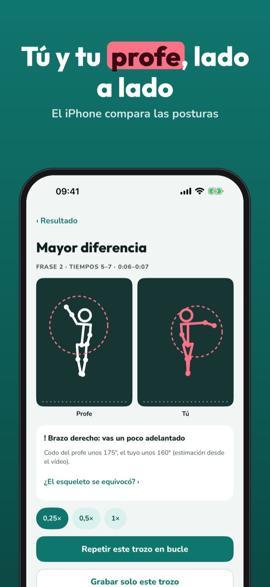
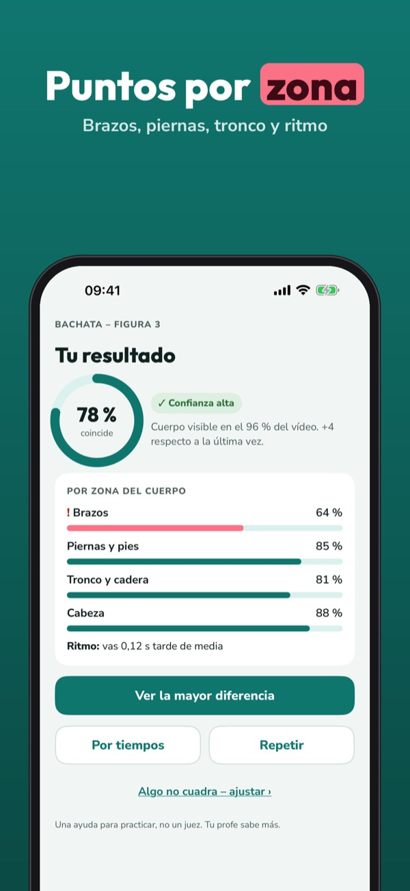
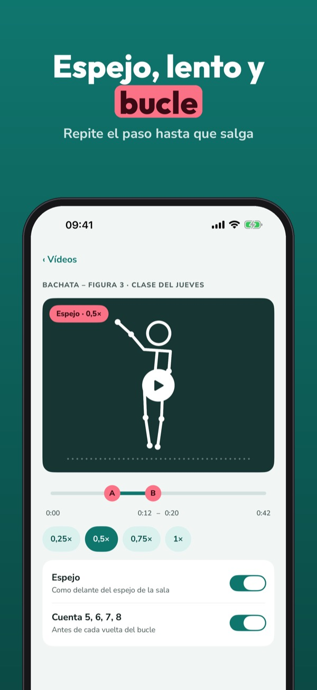
Mirrostep es tu espejo de práctica para el vídeo que te dio tu profe. Repite el paso en bucle, grábate y mira en qué momento y en qué parte del cuerpo te separas.
Sin compra puedes usar espejo, velocidad y bucle A-B, guardar 3 vídeos, grabarte y verte al lado del profe, y probar una comparación. Mirrostep Plus es un pago único: comparación por zonas, mayor diferencia, tiempos, vídeos sin límite y widget. Sin suscripción.
Mirrostep es una ayuda para practicar: la puntuación es una estimación a partir del vídeo, no una nota de baile. Usa solo vídeos tuyos o que tu profe te haya dado. Los vídeos no salen de tu iPhone. No está vinculada a ninguna academia.
Terms of Use (EULA): https://www.apple.com/legal/internet-services/itunes/dev/stdeula/
Privacy: https://baytechbv.github.io/privacy/mirrostep-eu/
Balla come il tuo insegnante
Importa il video del tuo corso, mettilo a specchio e al rallentatore, e riprenditi. Mirrostep confronta la tua postura con quella del maestro sull’iPhone, zona per zona.
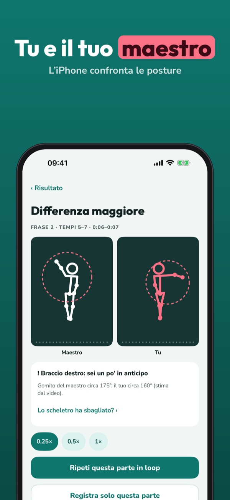
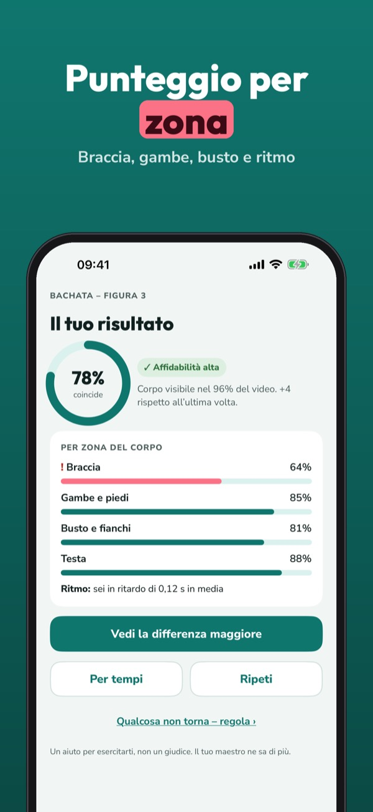
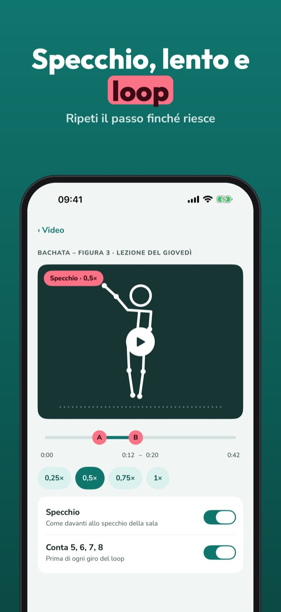
Mirrostep è il tuo specchio per il video che ti ha dato il maestro. Ripeti il passo in loop, riprenditi e scopri in quale momento e in quale parte del corpo ti allontani.
Senza acquisto puoi usare specchio, velocità e loop A-B, salvare 3 video, riprenderti e vederti accanto al maestro, e provare un confronto. Mirrostep Plus è un acquisto unico: confronto per zone, differenza più grande, tempi, video senza limiti e widget. Nessun abbonamento.
Mirrostep è un aiuto per esercitarsi: il punteggio è una stima dal video, non un voto di danza. Usa solo video tuoi o che ti ha dato il tuo maestro. I video non lasciano il tuo iPhone. Non è collegata a nessuna scuola di ballo.
Terms of Use (EULA): https://www.apple.com/legal/internet-services/itunes/dev/stdeula/
Privacy: https://baytechbv.github.io/privacy/mirrostep-eu/
Ćwicz z filmem instruktora
Zaimportuj film z zajęć, włącz lustro i zwolnienie, a potem nagraj siebie. Mirrostep porównuje twoją sylwetkę z sylwetką instruktora na iPhonie, partia po partii.
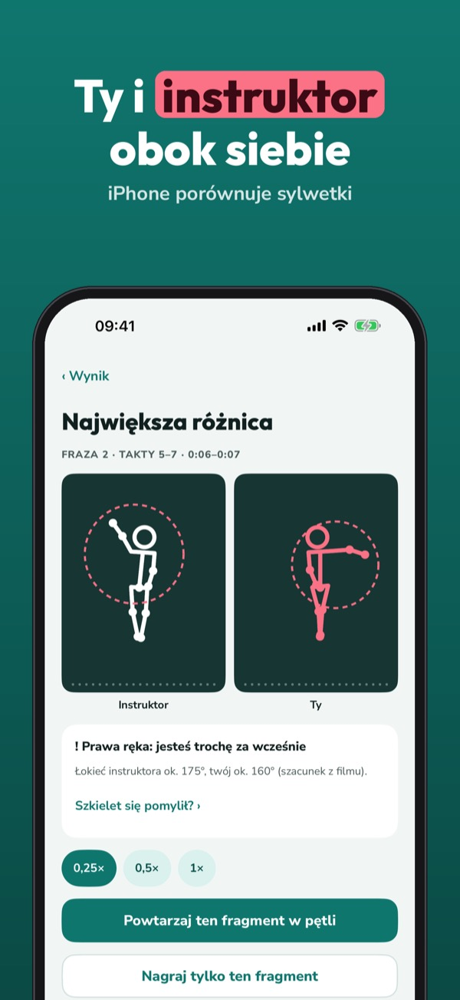
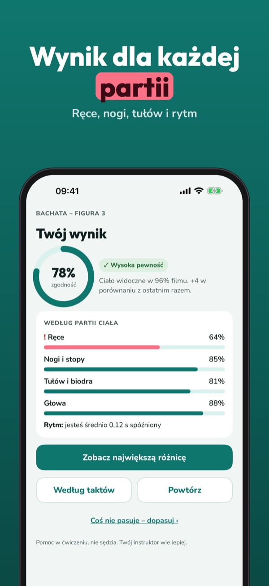
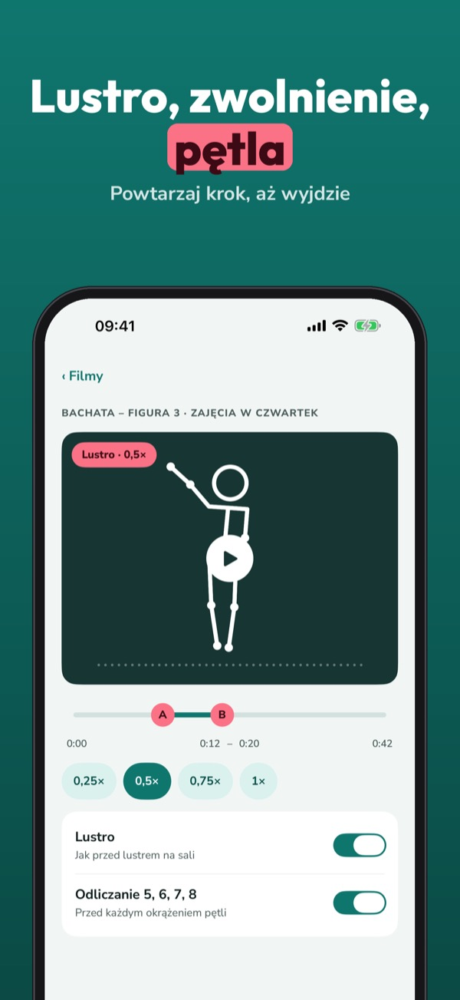
Mirrostep to lustro do ćwiczeń z filmem od twojego instruktora. Powtarzaj krok w pętli, nagraj się i zobacz, w którym momencie i którą częścią ciała odbiegasz od wzoru.
Bez zakupu: lustro, prędkość i pętla A-B, 3 filmy, nagrywanie siebie obok instruktora i jedno próbne porównanie. Mirrostep Plus to jednorazowy zakup: porównanie partii, największa różnica, takty, filmy bez limitu i widżet. Bez subskrypcji.
Mirrostep pomaga w ćwiczeniach: wynik to szacunek na podstawie filmu, a nie ocena tańca. Używaj tylko własnych filmów lub tych od instruktora. Filmy nie opuszczają iPhone’a. Aplikacja nie jest powiązana z żadną szkołą tańca.
Terms of Use (EULA): https://www.apple.com/legal/internet-services/itunes/dev/stdeula/
Privacy: https://baytechbv.github.io/privacy/mirrostep-eu/
Dansez comme votre prof
Importez la vidéo de votre cours, passez-la en miroir et au ralenti, puis filmez-vous. Mirrostep compare votre posture à celle du prof sur l’iPhone, zone par zone.
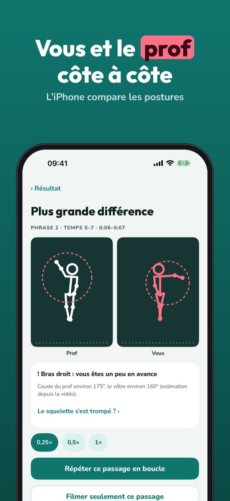
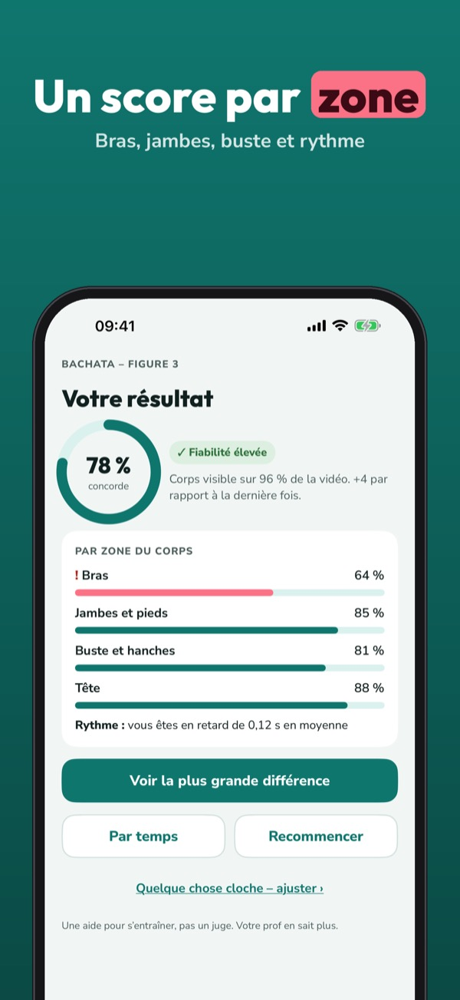
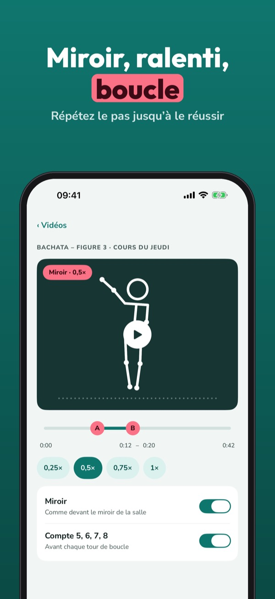
Mirrostep est votre miroir d’entraînement pour la vidéo donnée par votre prof. Répétez le pas en boucle, filmez-vous et voyez à quel moment et sur quelle partie du corps vous décrochez.
Sans achat : miroir, vitesse et boucle A-B, 3 vidéos, vous filmer à côté du prof et une comparaison d’essai. Mirrostep Plus est un achat unique : comparaison par zone, plus grande différence, temps, vidéos illimitées et widget. Sans abonnement.
Mirrostep est une aide à l’entraînement : le score est une estimation à partir de la vidéo, pas une note de danse. Utilisez seulement vos vidéos ou celles de votre prof. Les vidéos ne quittent pas votre iPhone. Sans lien avec une école de danse.
Terms of Use (EULA): https://www.apple.com/legal/internet-services/itunes/dev/stdeula/
Privacy: https://baytechbv.github.io/privacy/mirrostep-eu/
Tanzen üben mit Spiegel & Loop
Importiere dein Kursvideo, spiegle es, mach es langsamer und film dich selbst. Mirrostep vergleicht deine Haltung mit der deines Lehrers auf dem iPhone, Zone für Zone.
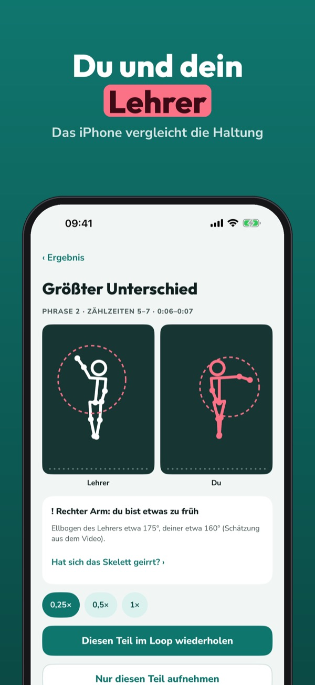
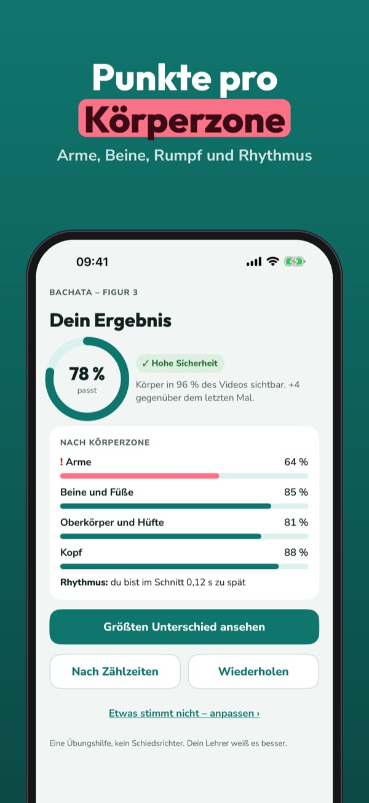
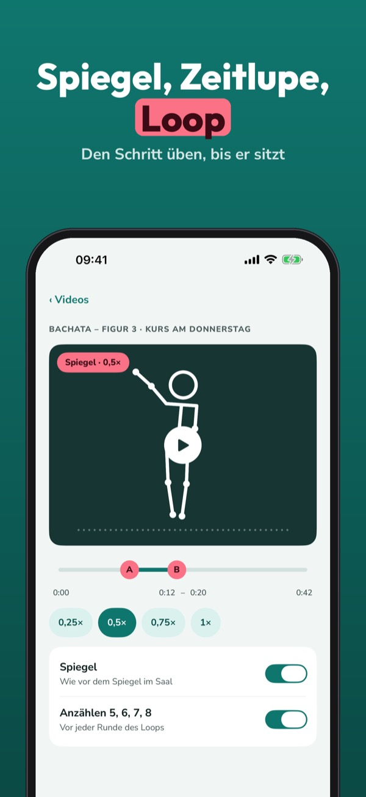
Mirrostep ist dein Übungsspiegel für das Video von deinem Tanzlehrer. Wiederhole den Schritt im Loop, film dich und sieh, wann und mit welchem Körperteil du abweichst.
Ohne Kauf: Spiegel, Tempo und A-B-Loop, 3 Videos, dich neben dem Lehrer filmen und ein Probevergleich. Mirrostep Plus ist ein Einmalkauf: Vergleich pro Zone, größter Unterschied, Zählzeiten, unbegrenzte Videos und Widget. Kein Abo.
Mirrostep ist eine Übungshilfe: Die Punkte sind eine Schätzung aus dem Video, keine Tanznote. Nutze nur eigene Videos oder solche von deinem Lehrer. Videos verlassen dein iPhone nicht. Mit keiner Tanzschule verbunden.
Terms of Use (EULA): https://www.apple.com/legal/internet-services/itunes/dev/stdeula/
Privacy: https://baytechbv.github.io/privacy/mirrostep-eu/